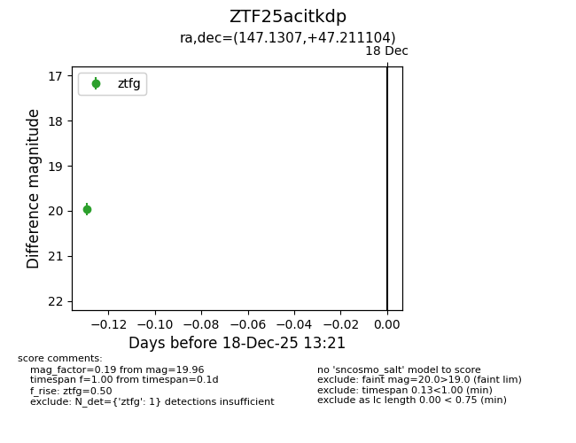
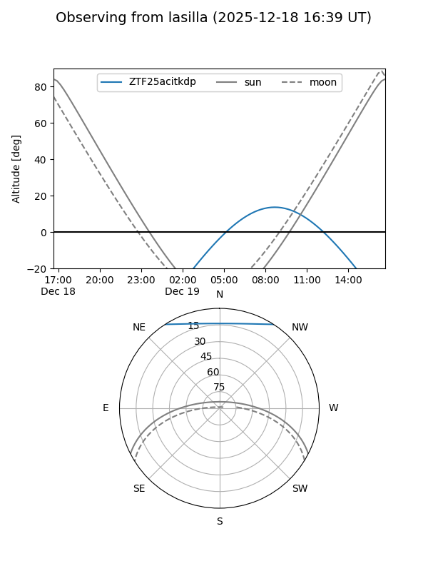
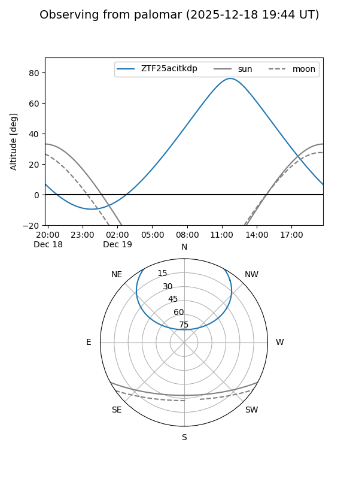

ZTF25acitkdp
Target ZTF25acitkdp at 2025-12-18 13:22
Aliases and brokers:
FINK: fink-portal.org/ZTF25acitkdp
Lasair: lasair-ztf.lsst.ac.uk/objects/ZTF25acitkdp
ALeRCE: alerce.online/object/ZTF25acitkdp
alt names
ZTF25acitkdp (ztf,fink_ztf)
Coordinates:
equatorial (ra, dec) = 147.1307,+47.21110
equatorial (HMS+DMS) = 09:48:31.37,+47:12:39.97
galactic (l, b) = (171.0008,+49.16988)
Photometry
last ztfg=19.96
1 ztfg detections
Lightcurve

Visibility


Additional plots